01🧠 Основи, які варто розуміти перед стартом
Звуки і значення: фонетика та лексикологія
🎯 Навіщо це знати
Усі правила далі (апостроф, м’який знак, уподібнення звуків, значення слів) спираються на кілька галузей мовознавства. Це не новий матеріал, а карта: що є що і де «живе» кожна проблема, яка трапляється на НМТ. Почнімо зі звуків і значень.
⚡ Головне за 30 секунд
- Фонетика — про звуки. Буква — те, що пишемо, звук — те, що чуємо. Вони не завжди збігаються.
- Голосних звуків шість: а, о, у, и, і, е. Приголосні вимовляються з перешкодою.
- Приголосні бувають дзвінкі / глухі (б — п) і тверді / м’які (стіл — сіль).
- Лексикологія — про значення слів: багатозначність, омоніми, синоніми, антоніми, фразеологізми.
📖 Пояснення
Буква і звук — не одне й те саме
Фонетика — розділ про звуки мови. Буква — це знак на папері, а звук — те, що ми чуємо й вимовляємо. Письмо лише «записує» мову, тому воно не завжди точне.
Голосні й приголосні
Голосні вимовляються без перешкоди, тільки голосом. Їх шість: а, о, у, и, і, е. Їх можна протягнути й навіть проспівати: «а-а-а».
Приголосні вимовляються з перешкодою: повітрю заважають губи, язик чи зуби. Спробуй протягнути «п» — не вийде, бо губи «закривають двері».
Дзвінкі й глухі
Дзвінкий приголосний вимовляється з голосом і шумом, глухий — тільки з шумом. Наприклад, б і п — пара з однаковим місцем вимови, але б дзвінкий, а п глухий.
Перевірка: приклади долоню до горла. На «б» відчуєш вібрацію (працює голос), на «п» — тиша.
Тверді й м’які
Приголосний стає м’яким, якщо після нього йде і, м’який знак або я, ю, є. Порівняй: у слові стіл звук «л» твердий, а в слові сіль — м’який, бо позначений м’яким знаком.
Лексикологія: що означає слово
Лексикологія — розділ про значення слів. Тут п’ять головних понять:
- багатозначність — одне слово має кілька пов’язаних значень: крило літака і крило птаха (форма схожа, тому й назва одна);
- омоніми — різні слова звучать однаково, але означають геть різне: коса — зачіска і коса — сільськогосподарське знаряддя;
- синоніми — слова, що означають майже те саме: гарний — красивий;
- антоніми — слова з протилежним значенням: гарячий — холодний;
- фразеологізми — стійкі вислови, значення яких не складається зі значень окремих слів: бити байдики означає «нічого не робити», хоча ніхто нічого не б’є.
Як відрізнити багатозначне слово від омонімів? Шукай зв’язок між значеннями. Крило птаха і крило літака схожі формою і роллю. А між зачіскою і знаряддям для косіння спільного нема — це просто збіг звучання.
🧩 Приклад → правило
Задача: скільки букв і скільки звуків у слові яблуко?
Міркуємо: букви: я-б-л-у-к-о, тобто шість. Тепер вимовляємо: [й]-[а]-[б]-[л]-[у]-[к]-[о]. Буква я на початку слова дала два звуки. Відповідь: 6 букв, 7 звуків.
Правило: рахуючи звуки, не дивись на запис — вимов слово вголос. Буква «я» на початку слова позначає два звуки, [й] і [а].
🗺️ Схема
- Фонетика (звуки)
- голосні (6): а, о, у, и, і, е — тільки голос
- приголосні — з перешкодою: дзвінкі / глухі (б — п), тверді / м’які (стіл — сіль)
- буква ≠ звук: яблуко — 6 букв, 7 звуків
- Лексикологія (значення)
- багатозначність — крило (птаха / літака)
- омоніми — коса (зачіска / знаряддя)
- синоніми — гарний / красивий
- антоніми — гарячий / холодний
- фразеологізми — бити байдики
💡 Запам’ятовувалка
Голосні «співаються»: а, о, у, и, і, е можна тягнути як пісню. Приголосні «спотикаються» об губи, язик і зуби.
Назви з грецької підказують зміст: «омо-» — однаковий (однаково звучать), «син-» — разом (значення поруч), «анти-» — проти (значення протилежні).
⚠️ Типові помилки
- Рахують звуки за буквами. Буква і звук не завжди збігаються: яблуко — 6 букв, 7 звуків.
- Плутають омоніми з багатозначністю. Якщо між значеннями є зв’язок (форма, роль), це одне багатозначне слово.
- Пояснюють фразеологізм «за словами». Бити байдики — це не про бійку, а про неробство.
❓ Перевір себе
- згадайНазви всі шість голосних звуків.
Відповідь
а, о, у, и, і, е. - чомуЧому «п» — глухий, а «б» — дзвінкий, хоча вимовляються однаково губами?
Відповідь
Місце вимови однакове, але «б» вимовляється з голосом і шумом, а «п» — тільки з шумом. - чомуЧому «л» у слові «сіль» м’яке?
Відповідь
Після нього стоїть м’який знак, а він пом’якшує попередній приголосний. - застосуй«Ключ від дверей» і «ключ, що б’є з-під землі». Це багатозначне слово чи омоніми?
Відповідь
Омоніми: між замком і джерелом немає смислового зв’язку, лише збіг звучання. - застосуйПідбери антонім і синонім до слова «гарний».
Відповідь
Синонім — красивий, антонім — негарний (поганий, потворний). - НМТЗвуків більше, ніж букв, у слові
- А стілець
- Б яблуко
- В книга
- Г зошит
Відповідь
Б. «Я» на початку слова позначає два звуки: 6 букв, 7 звуків.
🃏 Картки для повторення (натисни, щоб перевернути)
Буква vs звук
Скільки голосних звуків?
Дзвінкий vs глухий
Що пом’якшує приголосний?
Коса (зачіска) і коса (знаряддя)
Крило птаха і крило літака
Бити байдики
Слово зсередини: будова слова, словотвір, морфологія
🎯 Навіщо це знати
Більшість правил правопису звучать так: «на межі префікса і кореня…», «у суфіксі…», «з займенниками…». Якщо не бачиш частин слова і не знаєш частин мови, правило просто не «зачепиться».
⚡ Головне за 30 секунд
- Будова слова: префікс + корінь + суфікс + закінчення (під-вод-н-ий).
- Словотвір показує зв’язок між спорідненими словами: вода → водяний → підводний.
- Морфологія: 10 частин мови.
- 6 самостійних (іменник, прикметник, числівник, дієслово, прислівник, займенник), 3 службові (прийменник, сполучник, частка), вигук — окремо.
📖 Пояснення
Будова слова: з яких «деталей» воно складене
Будова слова (морфеміка) розбирає одне слово на частини — морфеми:
- корінь — несе основне лексичне значення (головний зміст слова);
- префікс — стоїть перед коренем;
- суфікс — стоїть після кореня, часто творить нове слово чи форму;
- закінчення — змінна частина в кінці слова, показує рід, число чи відмінок.
Приклад: підводний = під- (префікс) + -вод- (корінь) + -н- (суфікс) + -ий (закінчення).
Словотвір: родовід слів
Словотвір показує, як із наявних слів утворюються нові: додаванням префіксів і суфіксів, складанням двох коренів в одне слово тощо.
Різниця проста. Будова слова розбирає одне слово на частини. Словотвір показує зв’язок між спорідненими словами: вода → водяний → підводний.
Морфологія: десять частин мови
Морфологія — розділ про частини мови. Кожне слово належить до одного класу за тим, що воно означає і як змінюється.
- іменник (хто? що?) — предмет, істота чи явище: стіл, учениця, радість;
- прикметник (який? чий?) — ознака предмета: гарний, мамин;
- числівник (скільки? котрий?) — число або порядок при лічбі: п’ять, п’ятий;
- дієслово (що робити? що зробити?) — дія або стан: читати, спати;
- прислівник (як? де? коли?) — ознака дії чи іншої ознаки: швидко, учора;
- займенник — вказує на предмет, особу чи ознаку, не називаючи їх: я, він, який, ніхто;
- прийменник — службове слово, показує зв’язок між словами в реченні: в, на, під, через;
- сполучник — з’єднує однорідні члени речення чи частини складного речення: і, а, але, щоб;
- частка — додає слову чи реченню смисловий або емоційний відтінок: не, б, чи, ж;
- вигук — виражає почуття чи спонукання, нічого не називаючи: ой, гей, алло.
Самостійні, службові і вигук
Перші шість — самостійні: мають власне лексичне значення і бувають членами речення. Прийменник, сполучник і частка — службові: лише допомагають, членами речення самі не бувають. Вигук стоїть окремо від обох груп.
Кожна частина мови має свої граматичні ознаки. Наприклад, іменник змінюється за відмінками й числами, а прислівник не змінюється взагалі.
🧩 Приклад → правило
Задача: розбери слово підводний за будовою і покажи, від чого воно утворене.
Міркуємо: змінюємо форму — підводна, підводного: змінна частина -ий — закінчення. Спільне з вода — корінь -вод-. Перед ним під- — префікс, після нього -н- — суфікс. Ланцюжок словотвору: вода → водяний → підводний.
Алгоритм: 1) зміни форму слова — знайдеш закінчення; 2) підбери спільнокореневе — знайдеш корінь; 3) що перед коренем — префікс, що між коренем і закінченням — суфікс.
🗺️ Схема
- Самостійні (мають значення, бувають членами речення)
- іменник — хто? що?
- прикметник — який? чий?
- числівник — скільки? котрий?
- дієслово — що робити? що зробити?
- прислівник — як? де? коли?
- займенник — вказує, не називаючи
- Службові (лише допомагають)
- прийменник — в, на, під, через
- сполучник — і, а, але, щоб
- частка — не, б, чи, ж
- Окремо
- вигук — ой, гей, алло
💡 Запам’ятовувалка
Формула «6 + 3 + 1»: шість гравців на полі (самостійні), троє помічників на лаві (службові) і один уболівальник, що лише вигукує «Ой!», «Гей!» (вигук).
Слово-потяг: префікс — вагон спереду, корінь — локомотив, суфікс — вагон позаду, закінчення — змінний вагончик у хвості.
⚠️ Типові помилки
- Плутають будову слова і словотвір. Будова — частини одного слова, словотвір — зв’язок між різними спорідненими словами.
- Вважають займенник службовим, бо він «нічого не називає». Насправді займенник самостійний: він лише вказує на предмет чи ознаку.
- Шукають закінчення в прислівнику. Прислівник не змінюється, тому закінчення не має.
❓ Перевір себе
- згадайНазви три службові частини мови.
Відповідь
Прийменник, сполучник, частка. - чомуЧому сполучник не може бути членом речення?
Відповідь
Він службовий: не має власного лексичного значення, лише з’єднує слова чи частини речення. - чомуЧому закінчення називають змінною частиною слова?
Відповідь
Воно змінюється разом із формою слова й показує рід, число чи відмінок: підводний — підводна — підводним. - застосуйДо якої частини мови належить слово «учора»?
Відповідь
Прислівник: відповідає на питання «коли?» і не змінюється. - застосуйЩо показує ланцюжок «вода → водяний → підводний» — будову слова чи словотвір?
Відповідь
Словотвір: зв’язок між спорідненими словами. - НМТЛише службові частини мови наведено в рядку
- А під, швидко, але
- Б через, щоб, ж
- В ой, на, чи
- Г ніхто, а, не
Відповідь
Б. Прийменник, сполучник, частка; в інших рядках є прислівник (швидко), вигук (ой) чи займенник (ніхто).
🃏 Картки для повторення (натисни, щоб перевернути)
Під-вод-н-ий
Що несе корінь?
Будова слова vs словотвір
Скільки самостійних частин мови?
Службові частини мови
Ой, гей, алло
Яка частина мови не змінюється взагалі?
Речення і правопис: синтаксис, орфографія, пунктуація
🎯 Навіщо це знати
Коли пишеш повідомлення, есе чи резюме, помилка може бути в слові або в розділовому знаку. НМТ перевіряє обидва типи окремо, тож важливо одразу бачити, яка проблема перед тобою.
⚡ Головне за 30 секунд
- Синтаксис — про речення: як слова поєднуються і яку роль відіграють.
- Підмет + присудок = граматична основа. Додаток, означення, обставина — другорядні.
- Просте речення має одну основу, складне — дві й більше.
- Орфографічна помилка — неправильно написане слово, пунктуаційна — пропущений або зайвий знак.
📖 Пояснення
Головні члени речення
Синтаксис — розділ про речення. Головні члени — підмет (хто чи що виконує дію) і присудок (що робить підмет). Разом вони складають граматичну основу, тобто «скелет» речення.
Другорядні члени речення
Другорядні члени лише уточнюють головні:
- додаток — питання непрямих відмінків: кого? чого? кому? ким? (читаю книгу);
- означення — який? чий? (цікаву книгу);
- обставина — як? де? коли? чому? (читаю ввечері).
Просте і складне речення
Рахуй граматичні основи. Одна основа — речення просте: Сонце світить. Дві й більше — складне: Сонце світить, і пташки співають.
Орфографія і пунктуація — дві різні речі
Орфографія — правила написання слів, пунктуація — правила розділових знаків. Орфографічна помилка — неправильно написане слово, наприклад без потрібного апострофа. Пунктуаційна — пропущений або зайвий знак, наприклад кома, якої бракує перед «що» у складному реченні.
Тест НМТ перевіряє ці помилки окремо. Тому корисно одразу питати себе: «Проблема в букві чи в знаку?»
🧩 Приклад → правило
Задача: визнач, просте чи складне речення «Сонце світить, і пташки співають», і назви члени речення в словосполученні «читаю цікаву книгу ввечері».
Міркуємо: шукаємо основи. Сонце світить — перша, пташки співають — друга. Дві основи → складне. У другому прикладі: книгу (що?) — додаток, цікаву (яку?) — означення, ввечері (коли?) — обставина.
Алгоритм: 1) знайди всі пари «підмет + присудок»; 2) одна пара — просте речення, дві й більше — складне; 3) решту слів визначай за питанням: кого? чого? — додаток, який? — означення, як? де? коли? — обставина.
🗺️ Схема
| Член речення | Питання | Приклад |
|---|---|---|
| Підмет (головний) | хто? що? виконує дію | Сонце світить |
| Присудок (головний) | що робить підмет? | Сонце світить |
| Додаток | кого? чого? кому? ким? | читаю книгу |
| Означення | який? чий? | цікаву книгу |
| Обставина | як? де? коли? чому? | читаю ввечері |
💡 Запам’ятовувалка
«Орфо» — слово, «пункт» — крапка: орфографія лікує слова, пунктуація розставляє «крапки й коми».
Скільки основ — стільки «маленьких речень» всередині великого: дві основи = складне.
⚠️ Типові помилки
- Плутають тип помилки: пропущений апостроф — це орфографія, пропущена кома — пунктуація.
- Вважають речення складним через довжину. Важить кількість граматичних основ, а не кількість слів.
- Плутають додаток з означенням: книгу (що?) — додаток, цікаву (яку?) — означення.
❓ Перевір себе
- згадайЯкі члени речення складають граматичну основу?
Відповідь
Підмет і присудок. - чомуЧому додаток, означення й обставину називають другорядними?
Відповідь
Вони лише уточнюють головні члени; без них речення існує, а без основи — ні. - застосуйЯким членом речення є «ввечері» в реченні «Ми гуляли ввечері»?
Відповідь
Обставина: відповідає на питання «коли?». - застосуйУ слові пропущено апостроф. Це орфографічна чи пунктуаційна помилка?
Відповідь
Орфографічна: неправильно написане слово. - застосуй«Учні знали, що завтра екскурсія». Скільки тут граматичних основ?
Відповідь
Дві: «учні знали» і «(буде) екскурсія», тому речення складне, і перед «що» стоїть кома. - НМТСкладним є речення
- А Сонце світить.
- Б Ми читаємо цікаву книгу ввечері.
- В Сонце світить, і пташки співають.
- Г Учениця швидко написала диктант.
Відповідь
В. Дві граматичні основи: «сонце світить» і «пташки співають».
🃏 Картки для повторення (натисни, щоб перевернути)
Граматична основа
Додаток
Означення
Обставина
Просте vs складне речення
Орфографічна vs пунктуаційна помилка
02🧩 Загальна структура тесту
Тест НМТ з української мови складається з кількох блоків: тестів з однією правильною відповіддю (з варіантами), блоку роботи з текстом і блоку завдань на зіставлення. Цю структуру видно, якщо відкрити будь-який пробний тест або тест попередніх років — вона не секрет і повторюється щороку.
03🔊 Наголоси і фонетика
Перші два тести стосуються наголосів і фонетики — всього, що пов’язано зі звуками. Це одна з найстабільніших частин іспиту: вона повторюється в усіх сесіях НМТ без винятку.
04✍️ Правопис
Далі йде блок завдань з правопису — орієнтовно 5–7 балів на різні теми: вживання м’якого знака, апостроф, подовження приголосних, написання складних слів тощо.
Окремо варто виділити тест формату «орфографічну помилку допущено» — найпідступніший у цьому блоці. На відміну від інших завдань з правопису, тут перевіряється не одне конкретне правило, а вміння відшукати помилку серед речень, спираючись одразу на всі відомі правила.
Важливо чітко розрізняти чотири типи помилок — орфографічну, пунктуаційну, граматичну та лексичну, — щоб не шукати в завданні той тип помилки, який там узагалі не перевіряється.
05🛠️ Граматика, лексичні помилки, редагування
Наступний блок — граматика, лексичні помилки та різні види редагування речення. Доволі часто трапляється завдання з формулюванням «редагування потребує речення» — і воно вимагає окремої підготовки: треба розуміти, які типи редагування можуть перевірятися, а які ні, і вміти застосовувати відповідні правила.
Важливий нюанс: у завданнях цього типу не йдеться про орфографічні помилки, і шукати неправильно написані слова тут не потрібно — перевіряються інші, окремі моменти.
06📄 Робота з текстом
У цьому блоці дають текст із графічними позначками, і потрібно, зокрема, розставити речення в логічній послідовності. Виглядає незвично, але це не найскладніше завдання серед тих, що йдуть до того самого тексту.
Складнішим — за відгуками учнів — є завдання на пунктуаційну помилку: речень багато, вони насичені розділовими знаками, і треба знайти конкретне місце, де щось поставлено неправильно або чогось бракує. Це вимагає високої концентрації та уважного аналізу кожного речення, тому саме тут учні найчастіше починають нервувати.
До того самого тексту можуть додаватися також завдання на лексику (заміна слова) і на визначення типів речень.
🧩 Завдання ЗНО: засоби міжфразової єдності — порядок речень (28)
1. Порядок речень про інклюзивне навчання
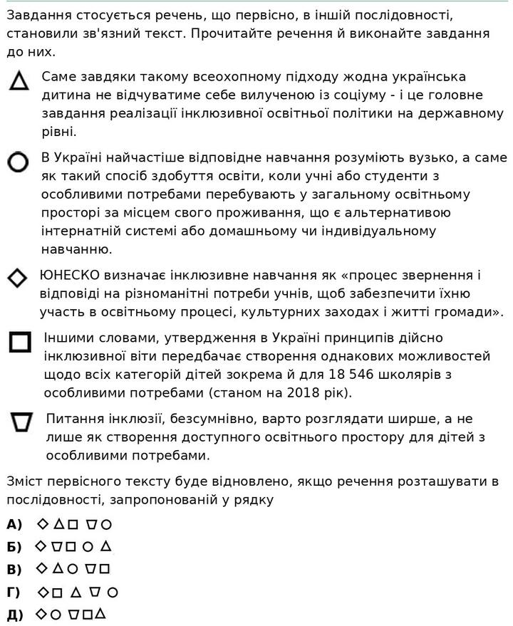
- А ◇ △ □ ▽ ○ ✗
- Б ◇ ▽ □ ○ △ ✗
- В ◇ △ ○ ▽ □ ✗
- Г ◇ □ △ ▽ ○ ✗
- Д ◇ ○ ▽ □ △ ✓
Відповідь: Д
Починає визначення ЮНЕСКО (◇). Далі ○ — як «в Україні» розуміють «вузько»; ▽ протиставляє: розглядати «ширше». □ «Іншими словами» підсумовує ширший погляд, а △ «Саме завдяки такому всеохопному підходу» завершує текст.
2. Порядок речень про ізоляцію
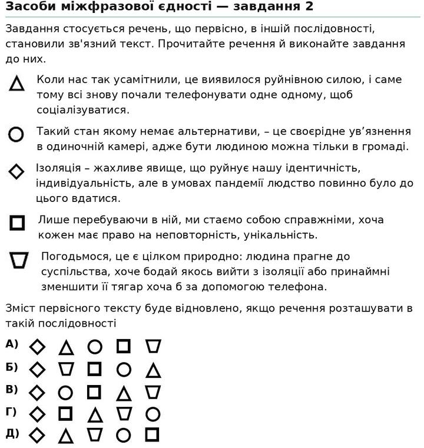
- А ◇ △ ○ □ ▽ ✗
- Б ◇ ▽ □ ○ △ ✗
- В ◇ ○ □ △ ▽ ✓
- Г ◇ □ △ ▽ ○ ✗
- Д ◇ △ ▽ ○ □ ✗
Відповідь: В
Теза — ◇ «Ізоляція – жахливе явище». ○ «Такий стан» = ізоляція; «бути людиною можна тільки в громаді» → □ «Лише перебуваючи в ній» (у громаді). △ «Коли нас так усамітнили… почали телефонувати» → ▽ «це цілком природно… за допомогою телефона».
3. Порядок речень про постери з насінням для метеликів
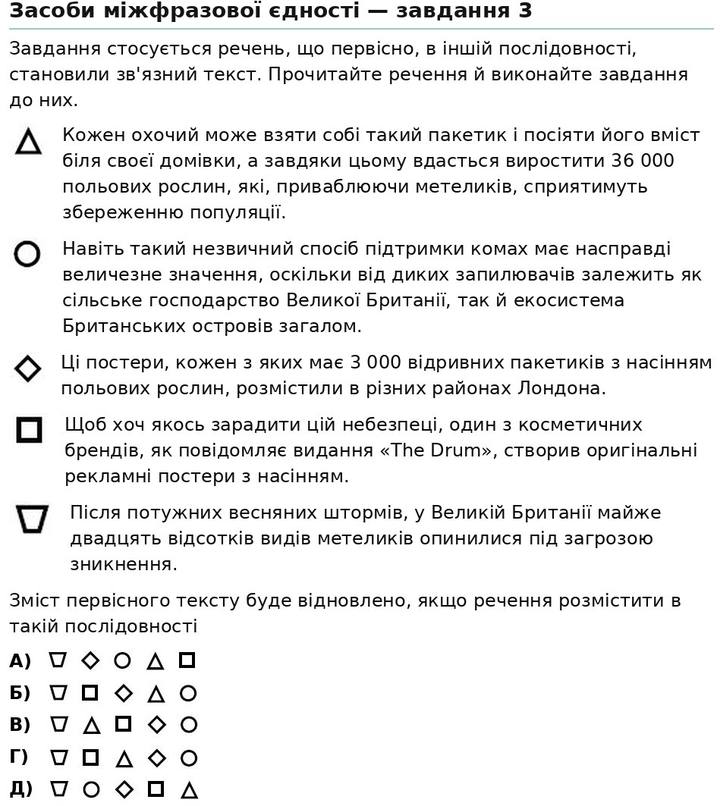
- А ▽ ◇ ○ △ □ ✗
- Б ▽ □ ◇ △ ○ ✓
- В ▽ △ □ ◇ ○ ✗
- Г ▽ □ △ ◇ ○ ✗
- Д ▽ ○ ◇ □ △ ✗
Відповідь: Б
Починає ▽ — проблема: метелики «під загрозою». □ «зарадити цій небезпеці… постери з насінням» → ◇ «Ці постери… пакетиків» → △ «такий пакетик… посіяти» → ○ «Навіть такий незвичний спосіб підтримки» — підсумок.
4. Порядок речень про якість питної води (варіант «беруть з підземних джерел»)
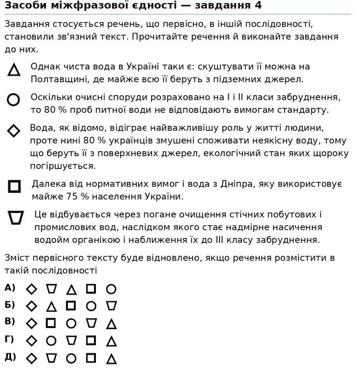
- А ◇ ▽ △ □ ○ ✗
- Б ◇ △ □ ○ ▽ ✗
- В ◇ □ ○ ▽ △ ✗
- Г ◇ ○ ▽ □ △ ✗
- Д ◇ ▽ ○ □ △ ✓
Відповідь: Д
◇ відкриває текст: вода з поверхневих джерел, стан «погіршується». ▽ «Це відбувається через погане очищення… до III класу забруднення» → ○ «очисні споруди розраховано на I і II класи» → □ «Далека від вимог і вода з Дніпра» → △ «Однак чиста вода таки є».
5. Порядок речень про винахід мішків для сміття
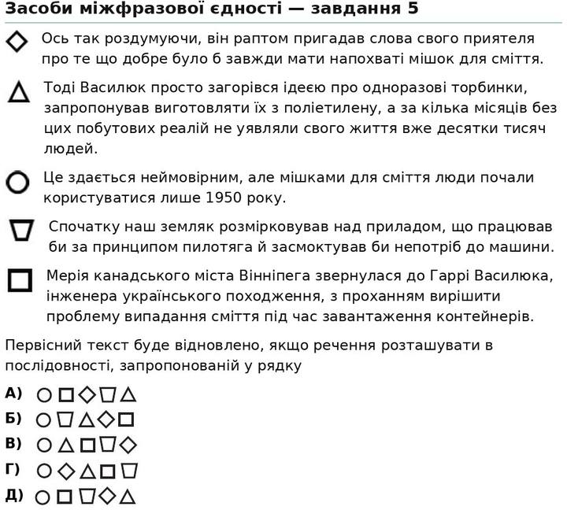
- А ○ □ ◇ ▽ △ ✗
- Б ○ ▽ △ ◇ □ ✗
- В ○ △ □ ▽ ◇ ✗
- Г ○ ◇ △ □ ▽ ✗
- Д ○ □ ▽ ◇ △ ✓
Відповідь: Д
○ — вступ: мішками почали користуватися «лише 1950 року». □ — мерія звернулася до Гаррі Василюка. ▽ «Спочатку наш земляк розмірковував» → ◇ «Ось так роздумуючи, він пригадав… мішок» → △ «Тоді Василюк загорівся ідеєю».
6. Порядок речень про творчість і креативність
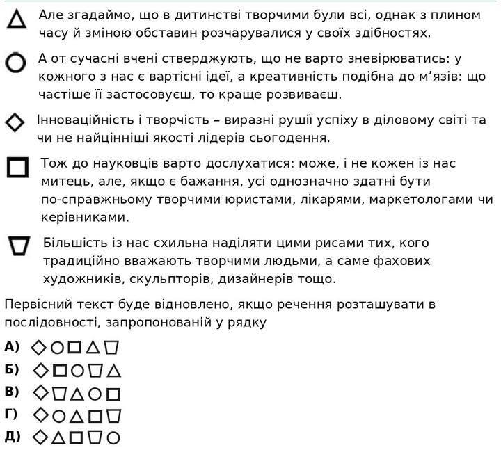
- А ◇ ○ □ △ ▽ ✗
- Б ◇ □ ○ ▽ △ ✗
- В ◇ ▽ △ ○ □ ✓
- Г ◇ ○ △ □ ▽ ✗
- Д ◇ △ □ ▽ ○ ✗
Відповідь: В
Теза ◇: творчість — якість лідерів. ▽ «наділяти цими рисами» фахових художників; △ «Але згадаймо… творчими були всі»; ○ «А от сучасні вчені стверджують» → □ «Тож до науковців варто дослухатися» — висновок.
7. Порядок речень про якість питної води (варіант «скуштувати таку»)
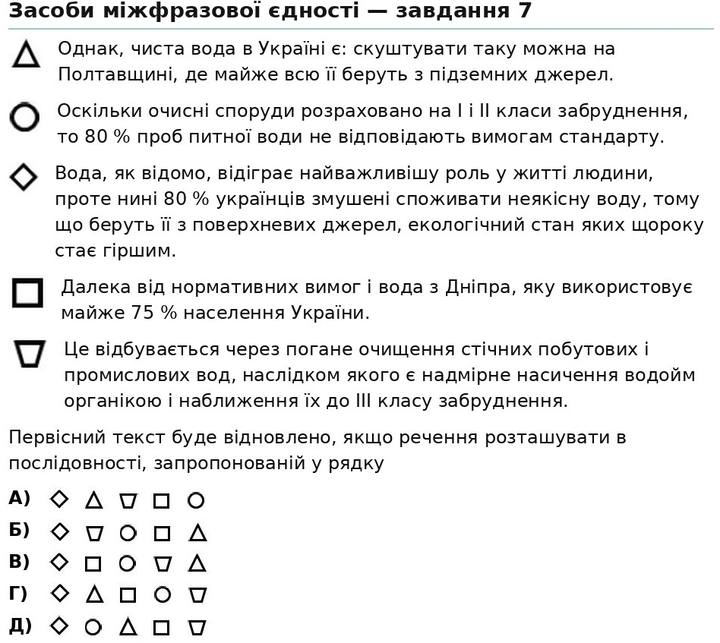
- А ◇ △ ▽ □ ○ ✗
- Б ◇ ▽ ○ □ △ ✓
- В ◇ □ ○ ▽ △ ✗
- Г ◇ △ □ ○ ▽ ✗
- Д ◇ ○ △ □ ▽ ✗
Відповідь: Б
◇ — теза про неякісну воду з поверхневих джерел. ▽ «Це відбувається через погане очищення… III класу» → ○ «очисні споруди розраховано на I і II класи» → □ «Далека від вимог і вода з Дніпра» → △ «Однак, чиста вода в Україні є».
8. Порядок речень про електронні гроші
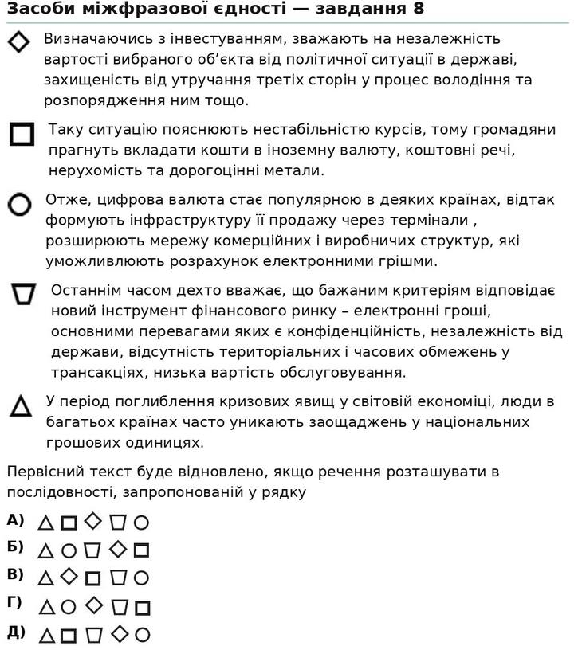
- А △ □ ◇ ▽ ○ ✓
- Б △ ○ ▽ ◇ □ ✗
- В △ ◇ □ ▽ ○ ✗
- Г △ ○ ◇ ▽ □ ✗
- Д △ □ ▽ ◇ ○ ✗
Відповідь: А
△ — вступ: під час криз люди уникають заощаджень у нацвалюті. □ «Таку ситуацію пояснюють…» → ◇ інвестуючи, зважають на критерії → ▽ «бажаним критеріям відповідає… електронні гроші» → ○ «Отже, цифрова валюта стає популярною».
9. Порядок речень про премію «Найхоробріша жінка світу»
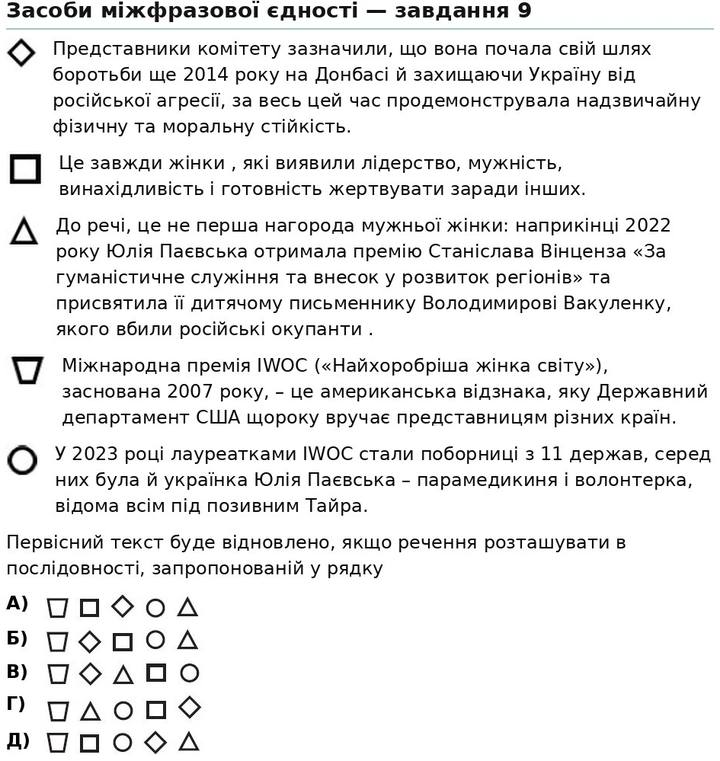
- А ▽ □ ◇ ○ △ ✗
- Б ▽ ◇ □ ○ △ ✗
- В ▽ ◇ △ □ ○ ✗
- Г ▽ △ ○ □ ◇ ✗
- Д ▽ □ ○ ◇ △ ✓
Відповідь: Д
▽ визначає премію IWOC. □ «Це завжди жінки…» — про лауреаток. ○ у 2023 році серед них Юлія Паєвська → ◇ «вона почала свій шлях 2014 року» → △ «До речі, це не перша нагорода» — додаткова інформація наприкінці.
10. Порядок речень про «пам’ять» інтернету
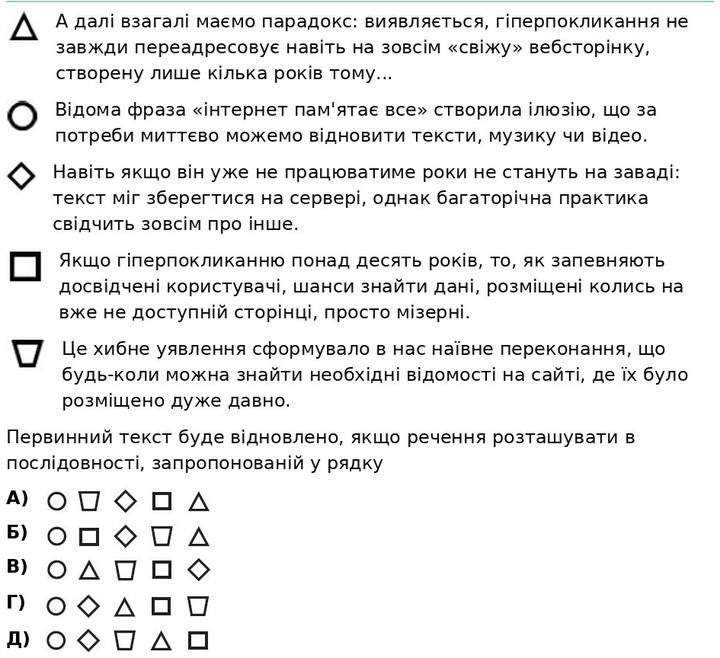
- А ○ ▽ ◇ □ △ ✓
- Б ○ □ ◇ ▽ △ ✗
- В ○ △ ▽ □ ◇ ✗
- Г ○ ◇ △ □ ▽ ✗
- Д ○ ◇ ▽ △ □ ✗
Відповідь: А
○ — фраза «інтернет пам’ятає все» створила ілюзію. ▽ «Це хибне уявлення… на сайті» → ◇ «Навіть якщо він (сайт) не працюватиме… практика свідчить про інше» → □ гіперпокликанню понад десять років — шанси мізерні → △ «А далі взагалі парадокс» — навіть «свіжа» сторінка.
11. Порядок речень про теорію щастя
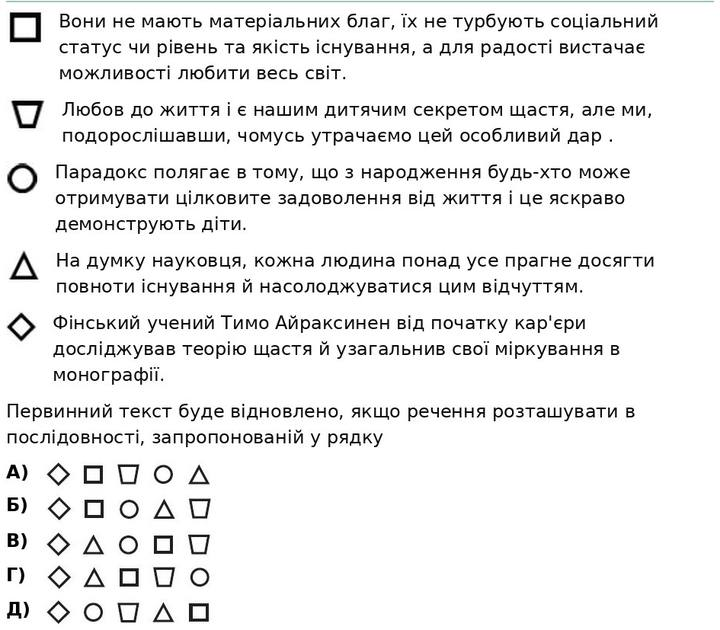
- А ◇ □ ▽ ○ △ ✗
- Б ◇ □ ○ △ ▽ ✗
- В ◇ △ ○ □ ▽ ✓
- Г ◇ △ □ ▽ ○ ✗
- Д ◇ ○ ▽ △ □ ✗
Відповідь: В
◇ представляє вченого Тимо Айраксинена. △ «На думку науковця» → ○ «Парадокс… це яскраво демонструють діти» → □ «Вони не мають матеріальних благ» (діти) → ▽ «Любов до життя і є нашим дитячим секретом щастя».
12. Порядок речень про повільні подорожі
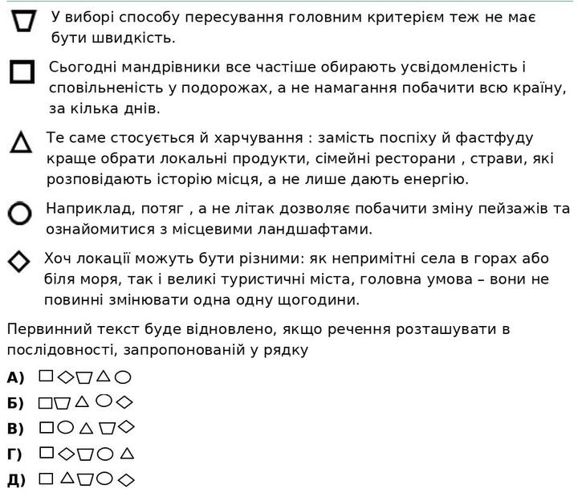
- А □ ◇ ▽ △ ○ ✗
- Б □ ▽ △ ○ ◇ ✗
- В □ ○ △ ▽ ◇ ✗
- Г □ ◇ ▽ ○ △ ✓
- Д □ △ ▽ ○ ◇ ✗
Відповідь: Г
□ — теза: мандрівники обирають «сповільненість». ◇ «Хоч локації можуть бути різними… не змінювати… щогодини» → ▽ «У виборі способу пересування теж не швидкість» → ○ «Наприклад, потяг» → △ «Те саме стосується й харчування».
13. Порядок речень про появу персонажа Маріо
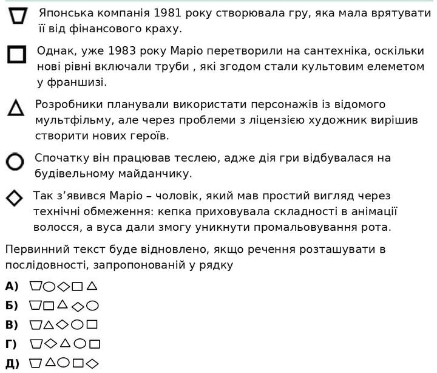
- А ▽ ○ ◇ □ △ ✗
- Б ▽ □ △ ◇ ○ ✗
- В ▽ △ ◇ ○ □ ✓
- Г ▽ ◇ △ ○ □ ✗
- Д ▽ △ ○ □ ◇ ✗
Відповідь: В
▽ — компанія створювала гру. △ розробники планували інших персонажів, але художник вирішив «створити нових героїв» → ◇ «Так з’явився Маріо» → ○ «Спочатку він працював теслею» → □ «Однак, уже 1983 року… сантехніка».
14. Порядок речень про історію автоспорту
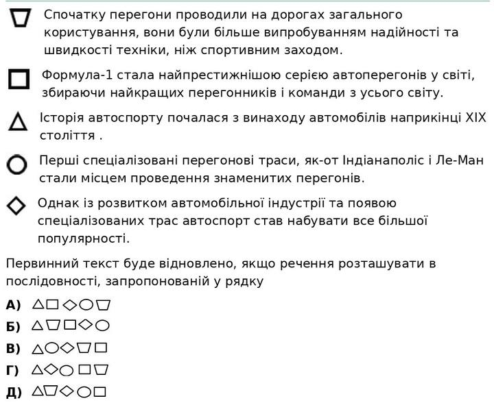
- А △ □ ◇ ○ ▽ ✗
- Б △ ▽ □ ◇ ○ ✗
- В △ ○ ◇ ▽ □ ✗
- Г △ ◇ ○ □ ▽ ✗
- Д △ ▽ ◇ ○ □ ✓
Відповідь: Д
△ — початок історії автоспорту. ▽ «Спочатку перегони проводили на дорогах» → ◇ «Однак із… появою спеціалізованих трас» → ○ «Перші спеціалізовані перегонові траси» → □ Формула-1 — сучасний підсумок.
15. Порядок речень про втрачений диск з біткоїнами
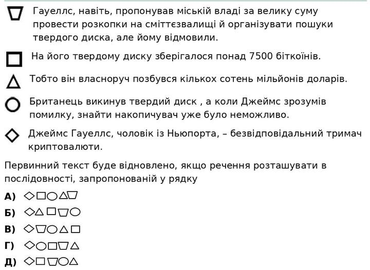
- А ◇ □ ○ △ ▽ ✓
- Б ◇ △ □ ▽ ○ ✗
- В ◇ ▽ ○ △ □ ✗
- Г ◇ ○ □ ▽ △ ✗
- Д ◇ □ ▽ ○ △ ✗
Відповідь: А
◇ представляє Джеймса Гауеллса. □ «На його твердому диску… 7500 біткоїнів» → ○ «Британець викинув твердий диск» → △ «Тобто він власноруч позбувся… мільйонів» → ▽ «Гауеллс, навіть, пропонував… розкопки» — завершення історії.
16. Порядок речень про екопродукцію
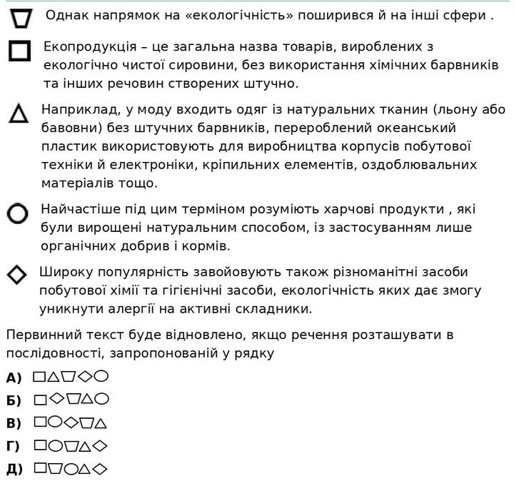
- А □ △ ▽ ◇ ○ ✗
- Б □ ◇ ▽ △ ○ ✗
- В □ ○ ◇ ▽ △ ✗
- Г □ ○ ▽ △ ◇ ✓
- Д □ ▽ ○ △ ◇ ✗
Відповідь: Г
□ — визначення екопродукції. ○ «під цим терміном розуміють харчові продукти» → ▽ «Однак напрямок… поширився й на інші сфери» → △ «Наприклад, одяг…» → ◇ «… також засоби побутової хімії».
17. Порядок речень про Вишневецький палац
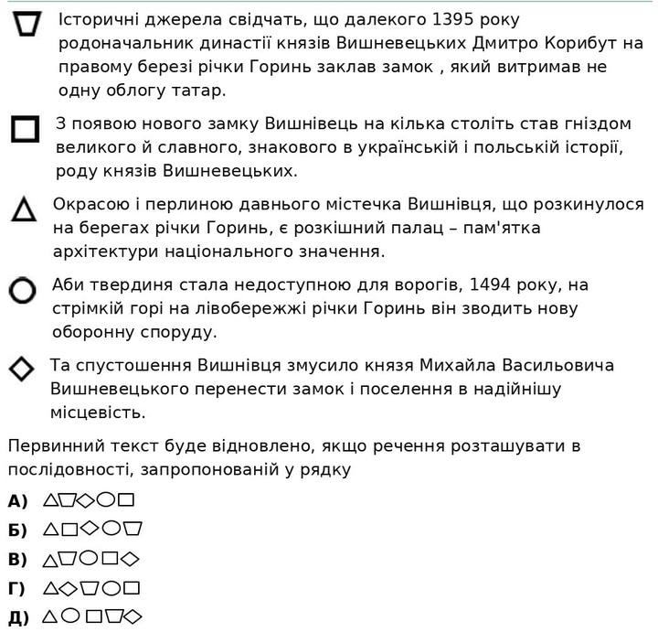
- А △ ▽ ◇ ○ □ ✓
- Б △ □ ◇ ○ ▽ ✗
- В △ ▽ ○ □ ◇ ✗
- Г △ ◇ ▽ ○ □ ✗
- Д △ ○ □ ▽ ◇ ✗
Відповідь: А
△ — теза про палац у Вишнівці. ▽ 1395 року Корибут заклав замок → ◇ «Та спустошення Вишнівця змусило… перенести замок» → ○ «Аби твердиня стала недоступною… зводить нову споруду» → □ «З появою нового замку…».
18. Порядок речень про метавсесвіт
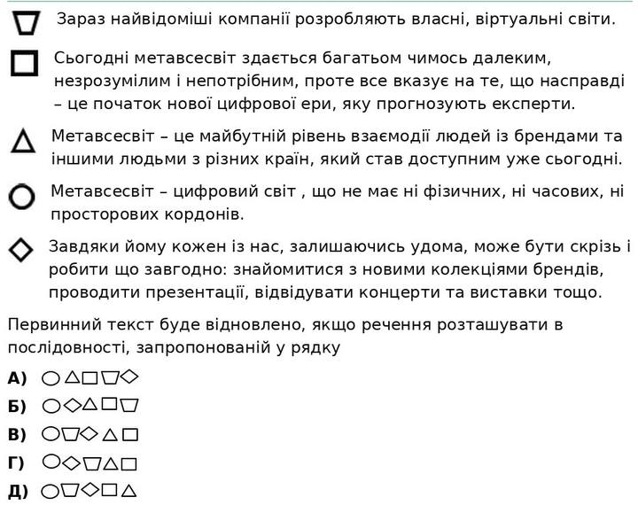
- А ○ △ □ ▽ ◇ ✗
- Б ○ ◇ △ □ ▽ ✗
- В ○ ▽ ◇ △ □ ✗
- Г ○ ◇ ▽ △ □ ✓
- Д ○ ▽ ◇ □ △ ✗
Відповідь: Г
○ — визначення метавсесвіту. ◇ «Завдяки йому» (метавсесвіту) можна бути скрізь → ▽ «Зараз… компанії розробляють… віртуальні світи» → △ «доступним уже сьогодні» → □ «Сьогодні метавсесвіт здається… далеким» — повтор слова і висновок.
19. Порядок речень про штучний інтелект у побуті
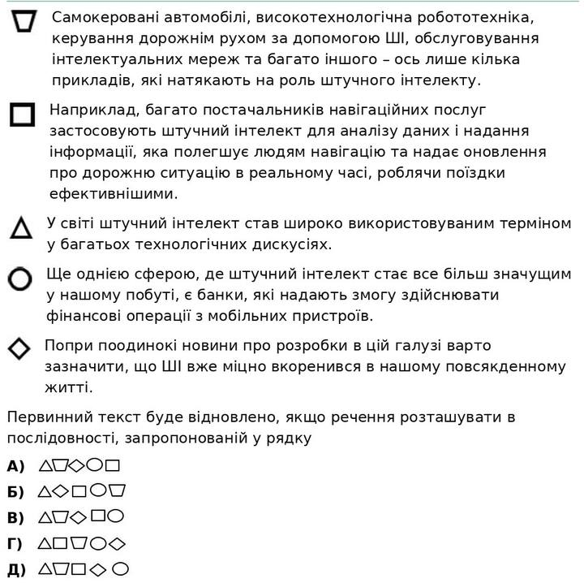
- А △ ▽ ◇ ○ □ ✗
- Б △ ◇ □ ○ ▽ ✗
- В △ ▽ ◇ □ ○ ✓
- Г △ □ ▽ ○ ◇ ✗
- Д △ ▽ □ ◇ ○ ✗
Відповідь: В
△ — теза: ШІ став поширеним терміном. ▽ приклади, що «натякають на роль ШІ» → ◇ «Попри поодинокі новини… в цій галузі… ШІ вкоренився в повсякденному житті» → □ «Наприклад, …навігаційних послуг» → ○ «Ще однією сферою… є банки».
20. Порядок речень про подовження доби на Землі
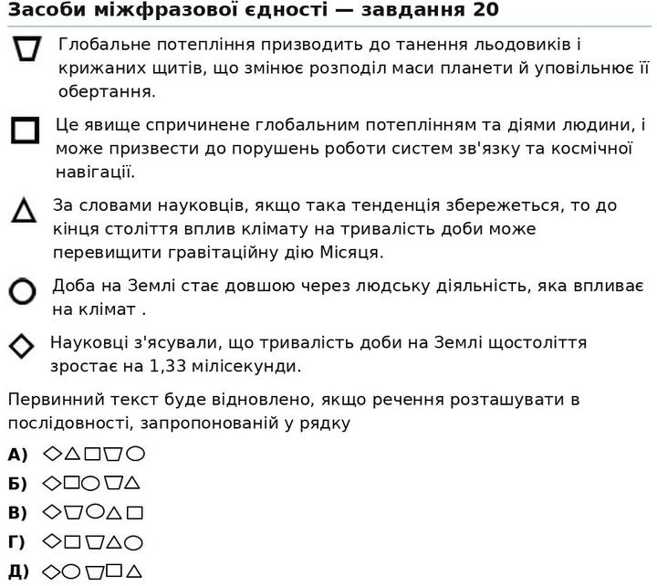
- А ◇ △ □ ▽ ○ ✗
- Б ◇ □ ○ ▽ △ ✓
- В ◇ ▽ ○ △ □ ✗
- Г ◇ □ ▽ △ ○ ✗
- Д ◇ ○ ▽ □ △ ✗
Відповідь: Б
◇ — факт: доба зростає на 1,33 мс. □ «Це явище спричинене потеплінням та діями людини» → ○ доба довшає «через людську діяльність, яка впливає на клімат» → ▽ потепління тане льодовики й уповільнює обертання → △ «якщо така тенденція збережеться».
21. Порядок речень про кіностудію Довженка
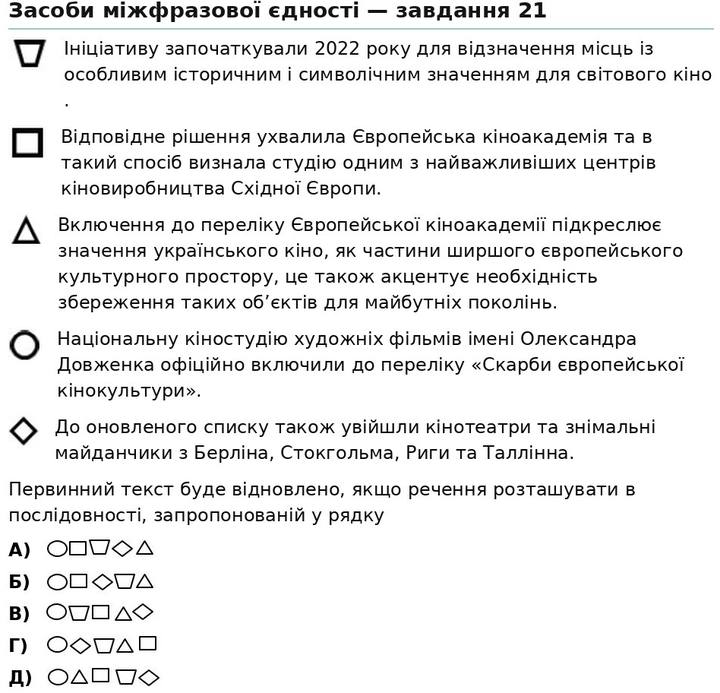
- А ○ □ ▽ ◇ △ ✓
- Б ○ □ ◇ ▽ △ ✗
- В ○ ▽ □ △ ◇ ✗
- Г ○ ◇ ▽ △ □ ✗
- Д ○ △ □ ▽ ◇ ✗
Відповідь: А
○ — новина: студію включили до переліку. □ «Відповідне рішення ухвалила Європейська кіноакадемія» → ▽ «Ініціативу започаткували 2022 року» → ◇ «До оновленого списку також увійшли…» → △ «Включення до переліку підкреслює…» — висновок.
22. Порядок речень про історію «Євробачення»
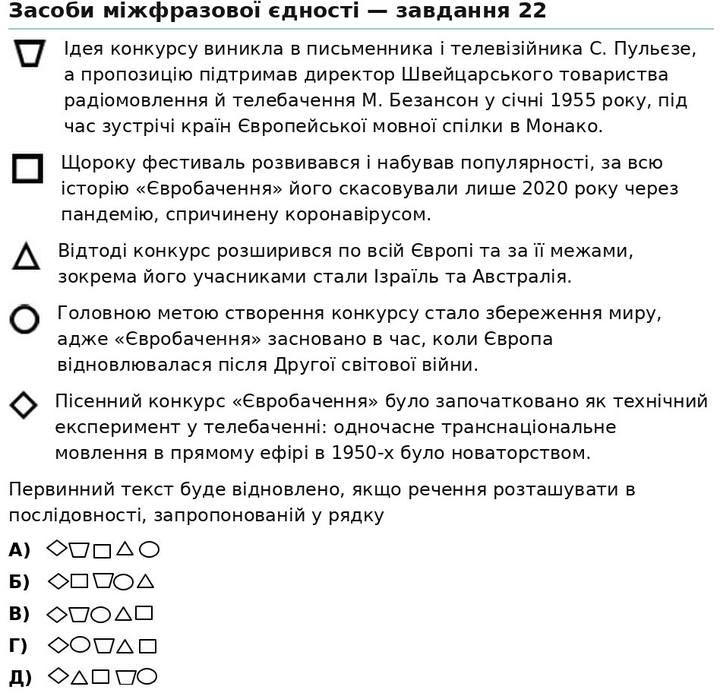
- А ◇ ▽ □ △ ○ ✗
- Б ◇ □ ▽ ○ △ ✗
- В ◇ ▽ ○ △ □ ✓
- Г ◇ ○ ▽ △ □ ✗
- Д ◇ △ □ ▽ ○ ✗
Відповідь: В
◇ — конкурс започатковано як експеримент на телебаченні. ▽ «Ідея конкурсу виникла» в телевізійника, 1955 рік → ○ мета — мир, коли «Європа відновлювалася» → △ «Відтоді конкурс розширився по всій Європі» → □ «Щороку фестиваль розвивався» — до 2020 року.
23. Порядок речень про перший МакДональдз
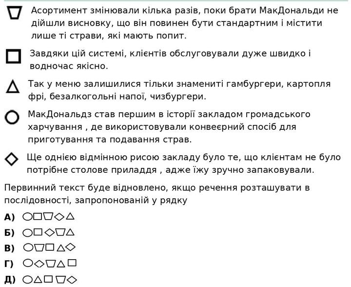
- А ○ □ ▽ ◇ △ ✗
- Б ○ □ ◇ ▽ △ ✓
- В ○ ▽ □ △ ◇ ✗
- Г ○ ◇ ▽ △ □ ✗
- Д ○ △ □ ▽ ◇ ✗
Відповідь: Б
○ — МакДональдз першим використав конвеєрний спосіб. □ «Завдяки цій системі» обслуговували швидко → ◇ «Ще однією відмінною рисою…» → ▽ асортимент змінювали, «поки… не дійшли висновку» → △ «Так у меню залишилися…».
24. Порядок речень про історію вишивки
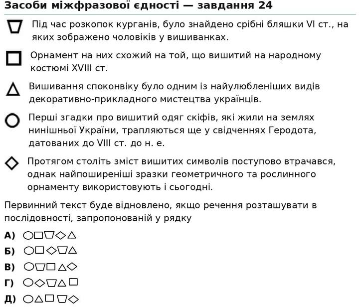
- А ○ □ ▽ ◇ △ ✗
- Б ○ □ ◇ ▽ △ ✗
- В ○ ▽ □ △ ◇ ✓
- Г ○ ◇ ▽ △ □ ✗
- Д ○ △ □ ▽ ◇ ✗
Відповідь: В
○ — перші згадки про вишитий одяг у Геродота. ▽ знайдено бляшки з чоловіками у вишиванках → □ «Орнамент на них» (бляшках) → △ вишивання — улюблений вид мистецтва → ◇ «Протягом століть зміст… втрачався, однак… використовують і сьогодні».
25. Порядок речень про створення парфумів
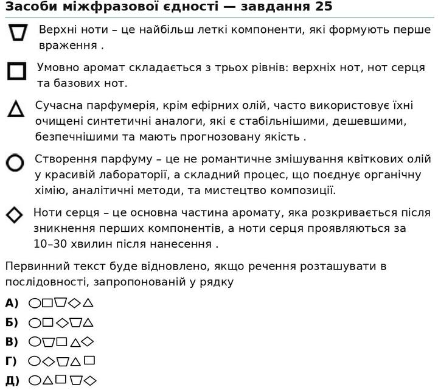
- А ○ □ ▽ ◇ △ ✗
- Б ○ □ ◇ ▽ △ ✗
- В ○ ▽ □ △ ◇ ✗
- Г ○ ◇ ▽ △ □ ✗
- Д ○ △ □ ▽ ◇ ✓
Відповідь: Д
○ — теза: створення парфуму — складний процес. △ сучасна парфумерія використовує синтетичні аналоги → □ аромат має три рівні: «верхні ноти, ноти серця, базові» → ▽ «Верхні ноти…» → ◇ «Ноти серця… після зникнення перших компонентів».
26. Порядок речень про палац листоноші Шеваля
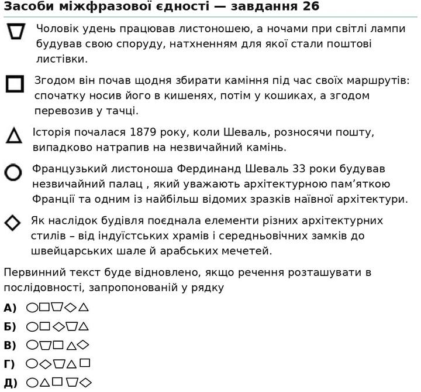
- А ○ □ ▽ ◇ △ ✗
- Б ○ □ ◇ ▽ △ ✗
- В ○ ▽ □ △ ◇ ✗
- Г ○ ◇ ▽ △ □ ✗
- Д ○ △ □ ▽ ◇ ✓
Відповідь: Д
○ представляє Шеваля і палац. △ «Історія почалася 1879 року… натрапив на камінь» → □ «Згодом він почав збирати каміння» → ▽ удень листоноша, ночами будував споруду → ◇ «Як наслідок будівля поєднала… стилі».
27. Порядок речень про невміння дорослішати
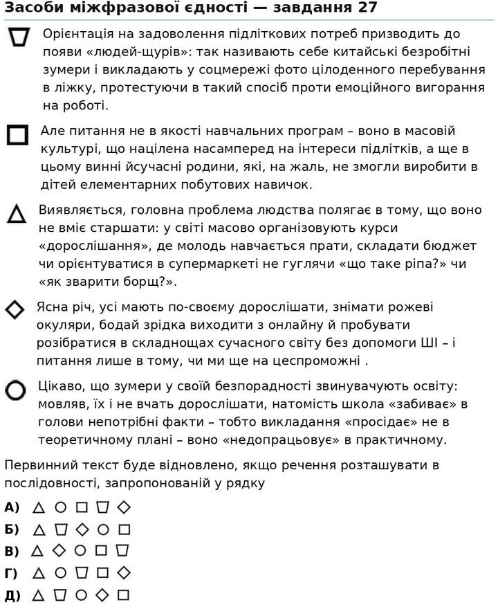
- А △ ○ □ ▽ ◇ ✓
- Б △ ▽ ◇ ○ □ ✗
- В △ ◇ ○ □ ▽ ✗
- Г △ ○ ▽ □ ◇ ✗
- Д △ ▽ ○ ◇ □ ✗
Відповідь: А
△ — теза: людство не вміє дорослішати. ○ зумери «звинувачують освіту» → □ «Але питання не в якості навчальних програм… інтереси підлітків» → ▽ «Орієнтація на задоволення підліткових потреб» → ◇ «Ясна річ, усі мають… дорослішати» — висновок.
28. Порядок речень про інтернет-коментаторів
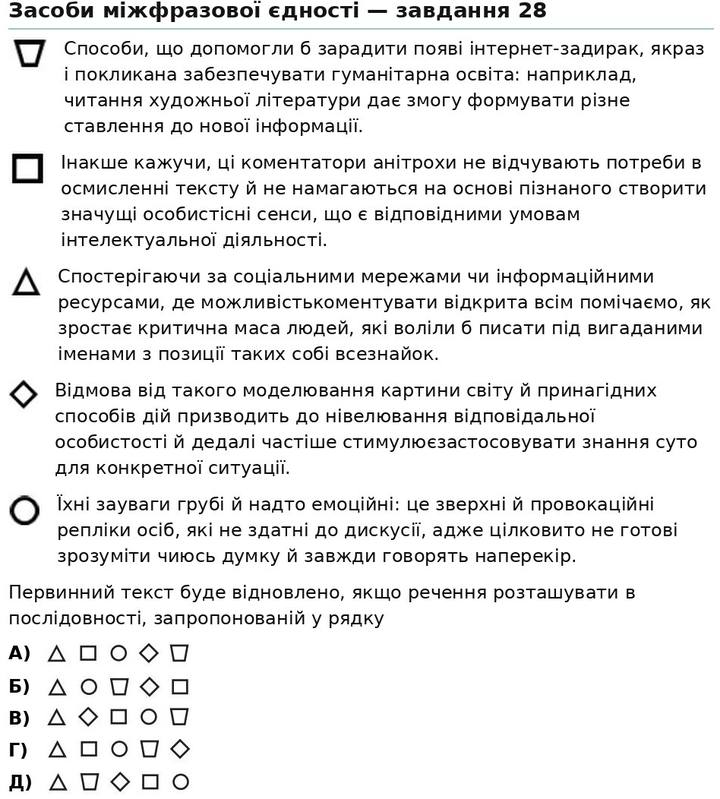
- А △ □ ○ ◇ ▽ ✗
- Б △ ○ ▽ ◇ □ ✗
- В △ ◇ □ ○ ▽ ✗
- Г △ □ ○ ▽ ◇ ✓
- Д △ ▽ ◇ □ ○ ✗
Відповідь: Г
△ — теза про «всезнайок» у соцмережах. □ «Інакше кажучи, ці коментатори…» → ○ «Їхні зауваги грубі» → ▽ способи «зарадити появі інтернет-задирак» — читання літератури → ◇ «Відмова від такого моделювання картини світу…» — висновок.
07🔗 Блок зіставлення
Блок зіставлення — найцінніший, і підготовку варто починати саме з нього: ці завдання переважно стосуються синтаксису — речень, відокремлених членів речення, простих і складних речень.
Найчастіше повторюваний тип — зіставлення видів речень (складносурядне, складнопідрядне, безсполучникове). Часто трапляється й великий за обсягом тест на зіставлення виділених фрагментів тексту (два стовпчики для зіставлення) — виглядає лячно, але складність не варто перебільшувати: кожен стовпчик можна розв’язувати окремо.
Інші варіанти завдань на зіставлення:
- зіставлення членів речення;
- зіставлення відокремлених конструкцій;
- визначення причини для тире (важливо розуміти саме причину постановки тире, а не лише факт, що воно там стоїть);
- зіставлення, пов’язані з лексикою — здебільшого фразеологізми за значенням чи контекстом, значення слів (зокрема запозичених), застарілі слова.
Окремо в блоці граматики є одне завдання на один бал про значення конкретного слова. Чіткого закритого переліку слів, які точно трапляться на іспиті, не існує — тому протягом року варто поступово розширювати словниковий запас і опрацьовувати значення нових слів та їхні синоніми, а не сподіватися на випадковий збіг.
Ще один тест, що трапляється в кожній сесії, — зіставлення слів із частинами мови. Він потребує застосування знань з усіх частин мови одразу.
08✅ Що гарантовано буде на іспиті
Гарантовано в кожній сесії
- завдання на наголоси (перелік слів обмежений і поданий у програмі)
- завдання на фонетику
- завдання на розрізнення частин мови (зі своїми тонкощами)
- завдання на фразеологізми та значення запозичених чи рідковживаних українських слів
- завдання з граматики й правопису — самі будуть точно, а от конкретна тема наперед не на 100% передбачувана